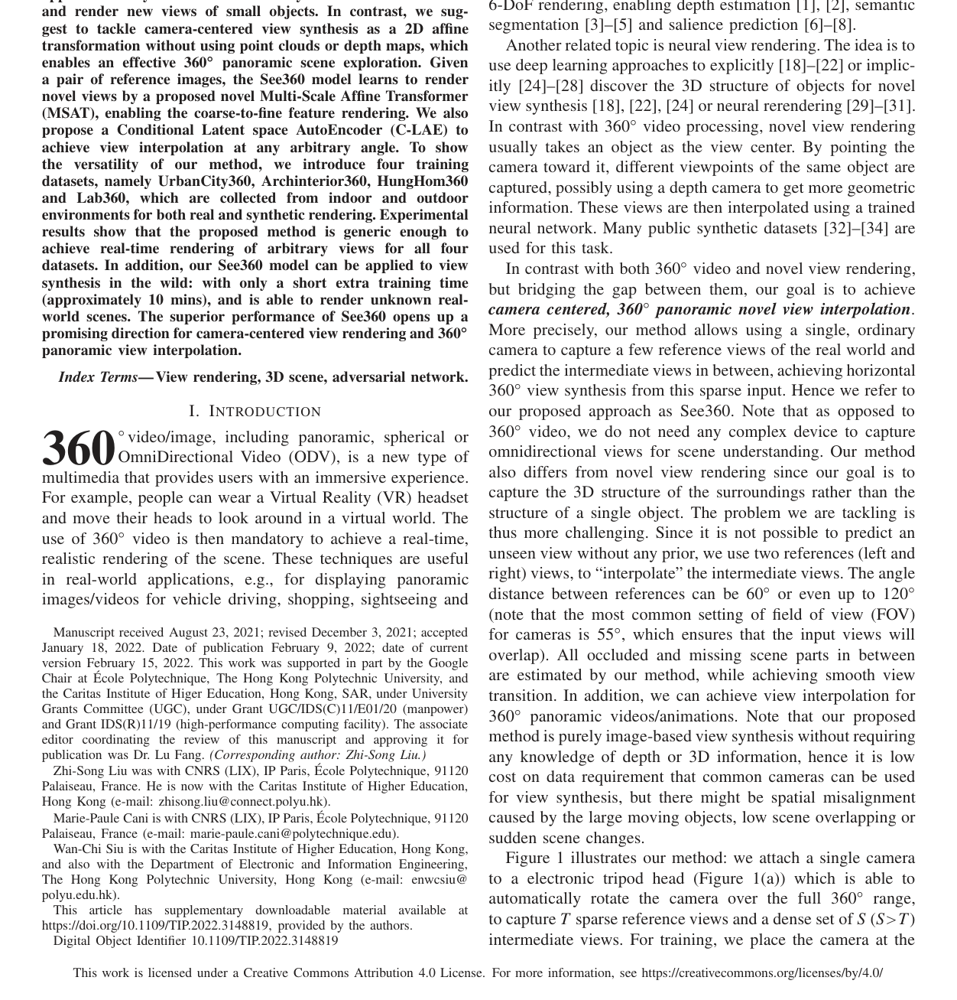
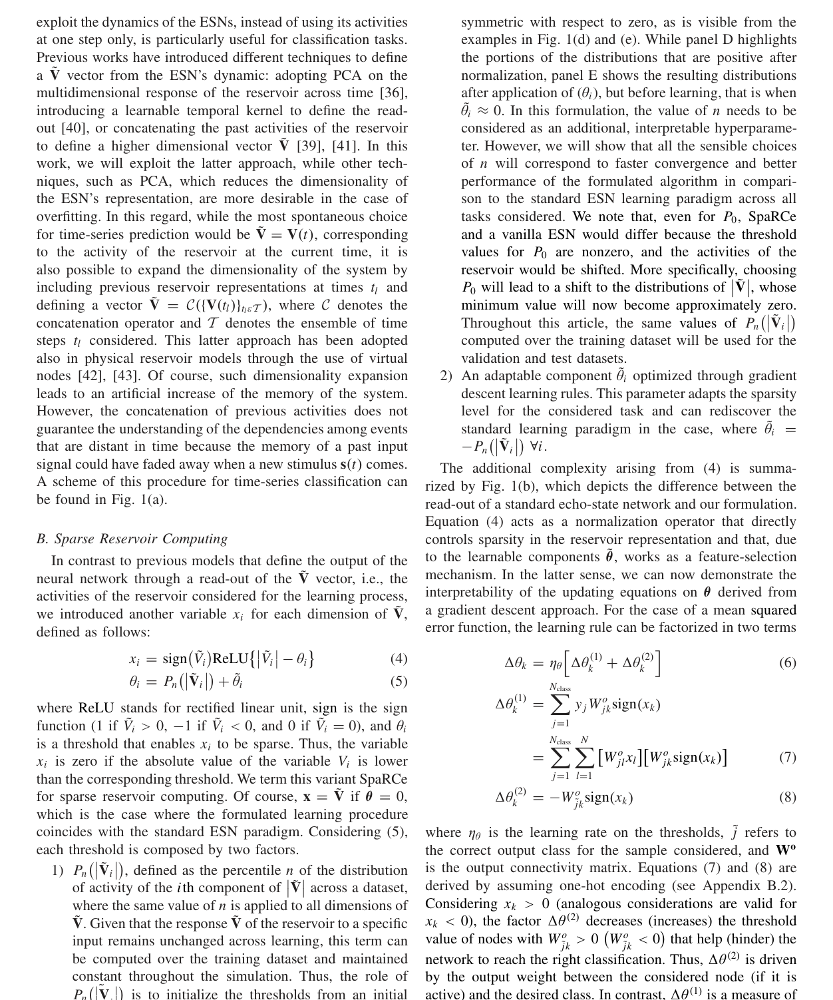
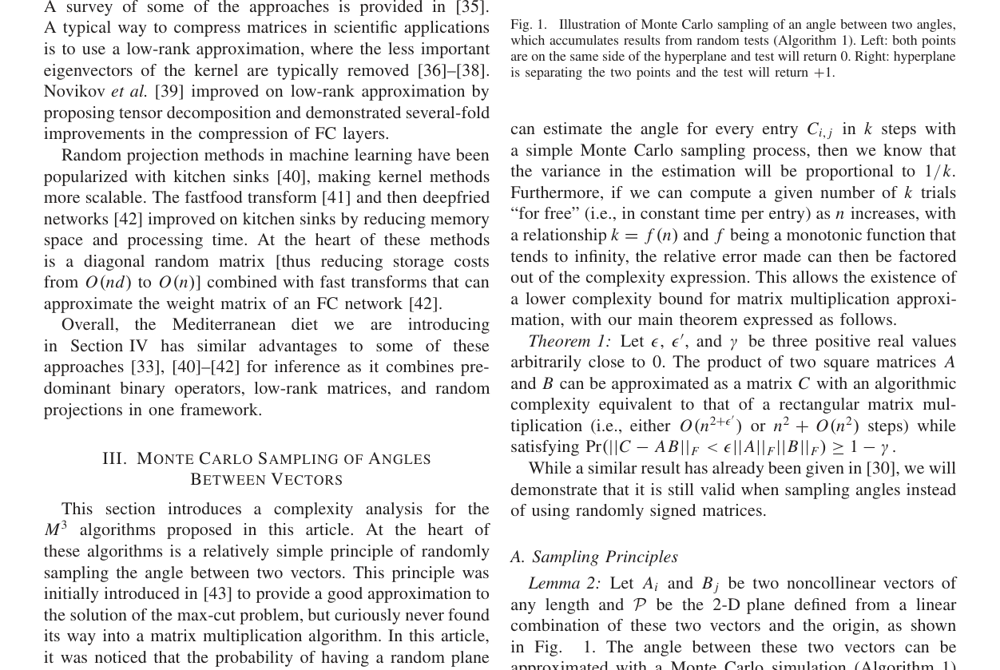

Main Figure Gallery

Multimodal Learning With Transformers: A Survey
IEEE TPAMI

See360: Novel Panoramic View Interpolation
IEEE TIP

Iterative Augmentation of Visual Evidence for Weakly Supervised Lesion Localization in Deep Interpretability Frameworks: Application to Color Fundus Images
IEEE TMI

SpaRCe: Improved Learning of Reservoir Computing Systems Through Sparse Representations
IEEE TNNLS

Fully Connected Networks on a Diet With the Mediterranean Matrix Multiplication
IEEE TNNLS